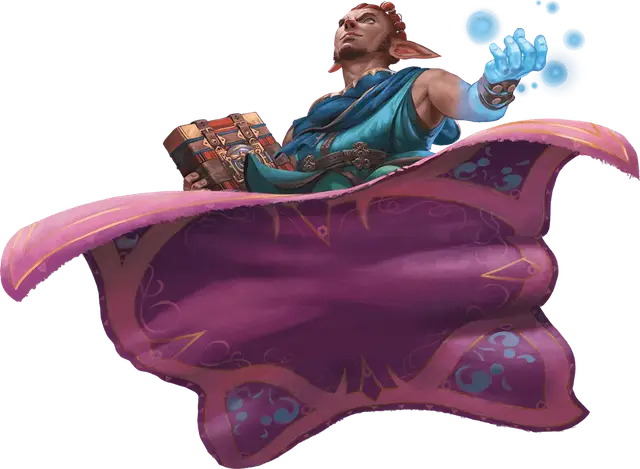

Ковёр-самолёт
Carpet of Flying
Чудесный предмет, очень редкий

Рекомендованная стоимость 5 001-50 000 зм
Вы можете произнести действием командное слово, чтобы ковёр смог парить и летать. Он перемещается в сказанных вами вслух направлениях, при условии, что вы находитесь в пределах 30 футов от него. Существует четыре версии такого ковра. Мастер сам выбирает размер ковра или определяет его случайным образом.
| к100 | Размер | Грузоподъёмность | Скорость полёта |
| 01-20 | 3 футов × 5 футов | 200 фнт. | 80 футов |
| 21-55 | 4 футов × 6 футов | 400 фнт. | 60 футов |
| 56-80 | 5 футов × 7 футов | 600 фнт. | 40 футов |
| 81-100 | 6 футов × 9 футов | 800 фнт. | 30 футов |
Ковёр может поднять в два раза больший вес, чем тот, что указан в таблице, но при нагрузке больше расчётной его скорость уменьшается вдвое.